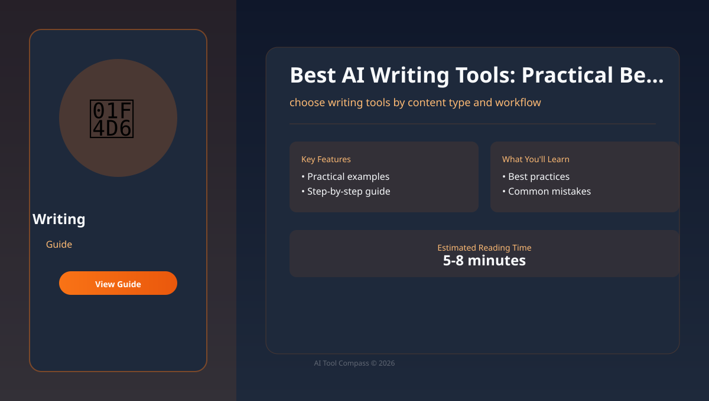
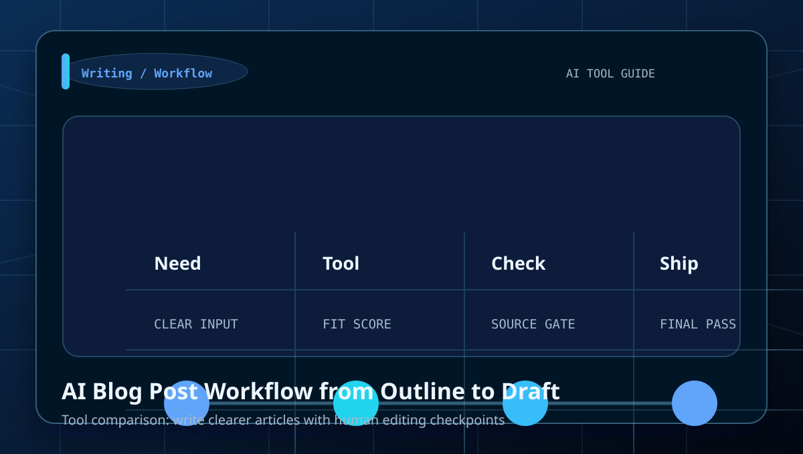
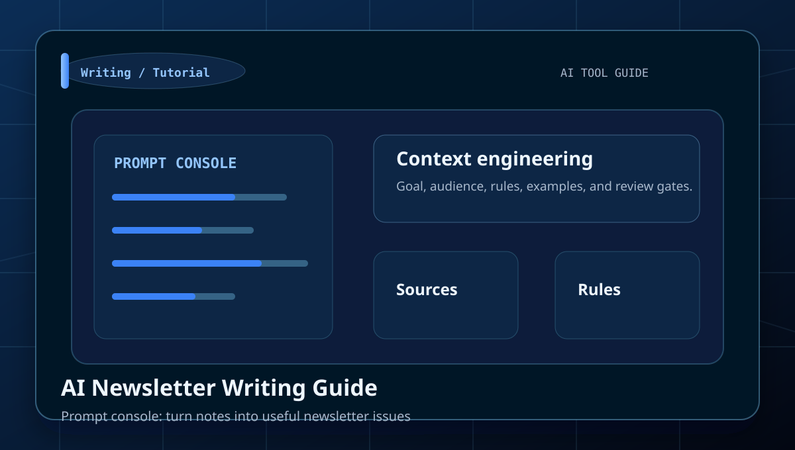
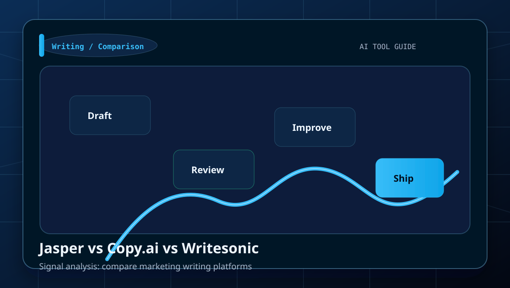
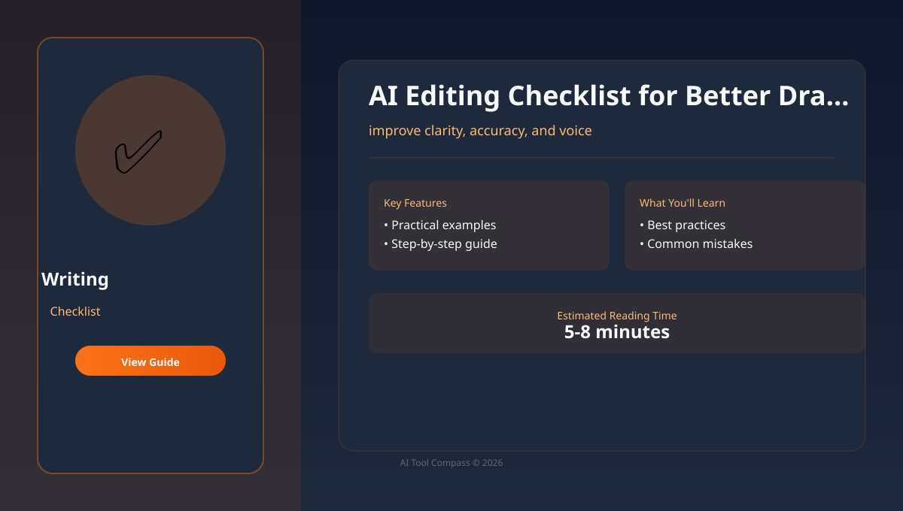
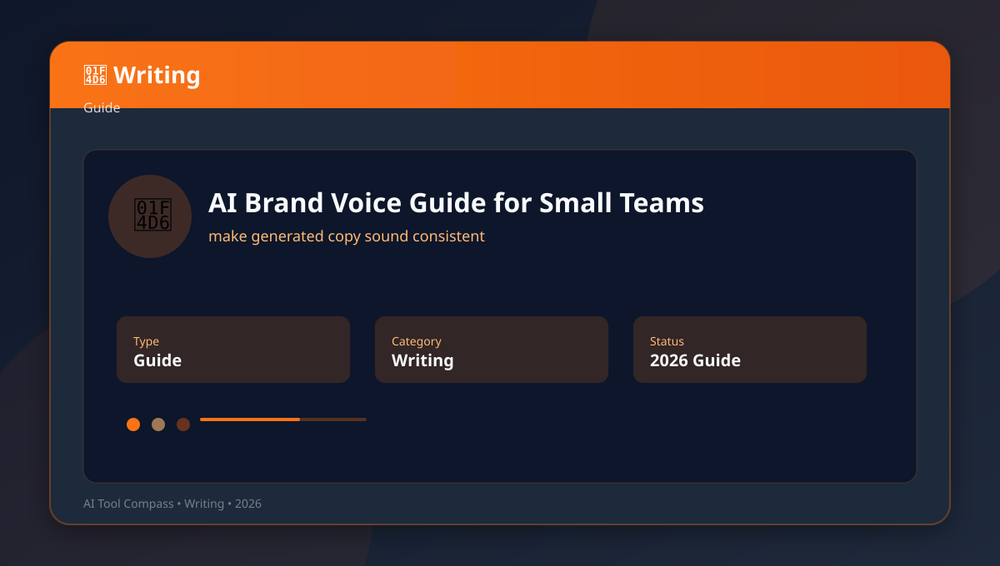
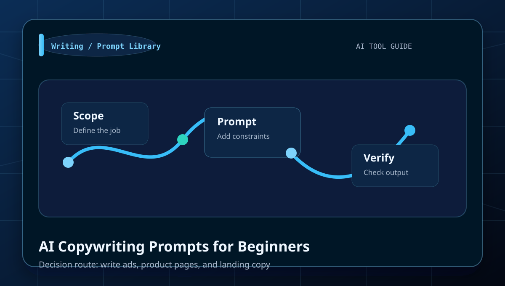
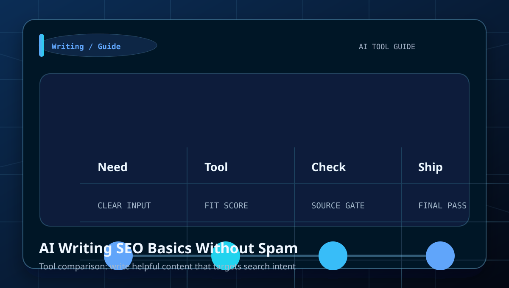
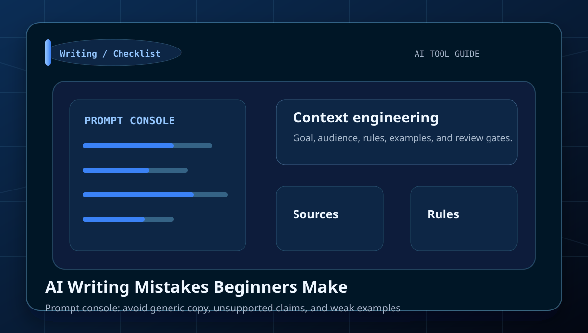
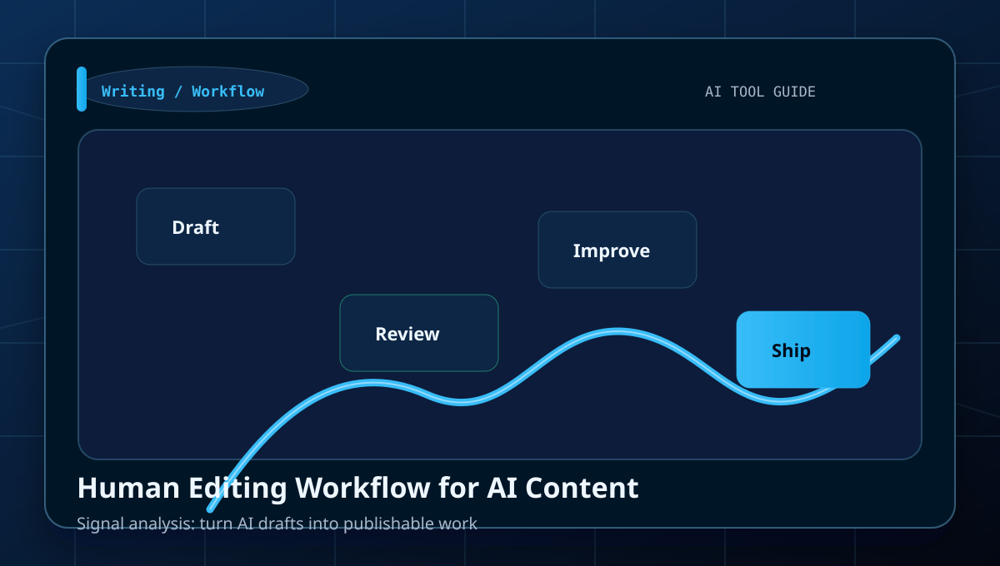

Best AI Writing Tools: Practical Beginner Guide
Start here if you want the fastest overview before drilling into narrower use cases.
Open starting guideCategory
Tutorials, comparisons, prompt examples, and beginner workflows for blog posts, newsletters, ads, editing, brand voice, and content planning.
blog posts, newsletters, ads, editing, brand voice, and content planning.
Use the comparison tables to decide which tool fits each job.
Start here
A strong category page should not make the reader guess which article matters first. These picks route a beginner into the fastest useful next step.
Start here if you want the fastest overview before drilling into narrower use cases.
Open starting guideUse a comparison page before you choose a subscription, workflow, or default tool in this cluster.
Open comparisonMove from tool discovery into a repeatable sequence that helps a beginner finish an actual task.
Open workflowUse a prompt library or checklist to tighten output quality before you publish, ship, or pay.
Open prompt or checklistUse the cluster well
This layer is here to increase search utility: when to use the category, what to compare, and how to avoid wasting a subscription on the wrong task.
You need help with blog posts, newsletters, ads, editing, brand voice, and content planning and want a task-first route instead of opening tools at random.
Do not treat brand awareness as proof. Use the comparison pages to check workflow fit, output quality, and review burden first.
Pick one guide, test one real task, and only then decide whether this cluster needs a paid tool or just a better workflow.
Look for pages with examples, prompts, checklists, and mistake prevention. Those are stronger than generic tool roundups.
Library

Learn how to choose writing tools by content type and workflow with a clear workflow, examples, and beginner mistakes to avoid.

Learn how to write clearer articles with human editing checkpoints with a clear workflow, examples, and beginner mistakes to avoid.

Learn how to turn notes into useful newsletter issues with a clear workflow, examples, and beginner mistakes to avoid.

Learn how to compare marketing writing platforms with a clear workflow, examples, and beginner mistakes to avoid.

Learn how to improve clarity, accuracy, and voice with a clear workflow, examples, and beginner mistakes to avoid.

Learn how to make generated copy sound consistent with a clear workflow, examples, and beginner mistakes to avoid.

Learn how to write ads, product pages, and landing copy with a clear workflow, examples, and beginner mistakes to avoid.

Learn how to write helpful content that targets search intent with a clear workflow, examples, and beginner mistakes to avoid.

Learn how to avoid generic copy, unsupported claims, and weak examples with a clear workflow, examples, and beginner mistakes to avoid.

Learn how to turn AI drafts into publishable work with a clear workflow, examples, and beginner mistakes to avoid.